Turning Earth observation into early warnings.
> Flood Risk · Drought Monitoring · Disaster Risk Reduction
I build geospatial AI and deep-learning models on Earth-observation data to map hazards, monitor climate extremes, and drive decision-support for early warning systems.
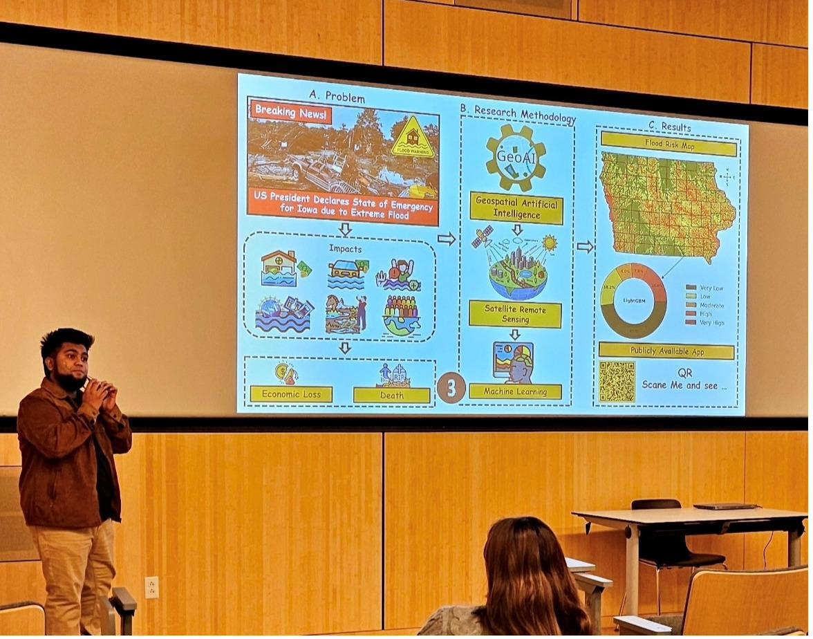
Researcher in GeoAI & hazard science
I am a PhD researcher specializing in geospatial artificial intelligence (GeoAI), spatial machine learning, and satellite remote sensing for disaster risk reduction, hazard monitoring, and early warning systems. My work fuses Earth-observation and climate datasets into predictive, decision-ready tools — from flood susceptibility maps to multi-depth drought dynamics across the U.S. Midwest.
🤝 Open to: collaboration on GeoAI, DRR, and decision-support research
📫 Contact: mtasnimmukarram@uiowa.edu
Where AI meets the changing Earth
Geospatial AI & Deep Learning
Vision transformers, ensemble learning, and explainable AI for land surface temperature, flood susceptibility, and climate prediction.
Earth Observation Analytics
LiDAR, Landsat, and reanalysis data processed at scale in Google Earth Engine to decode land cover, urban heat, and hydrology.
Flood & Drought Intelligence
Susceptibility mapping, crop-exposure assessment, and multi-depth soil-moisture drought dynamics across the KANI region.
Early Warning Systems
Frameworks fusing environmental datasets into actionable, socially-aware warnings for disaster risk reduction.
Academic background
PhD, Geographic Information Science & Cartography
Master's in Informatics
PGD in Data Science
Master's in Environmental Economics
BSc in Civil & Environmental Engineering
Research & professional roles
Graduate Research Assistant (GRA)
Graduate Teaching / Research Assistant
Associate Environmental Engineer
GIS & Water Quality Specialist
Graduate Research Assistant (GRA)
Journal articles
Author name in bold denotes my contribution. Full list of 15 articles below — published, in revision, and under review.
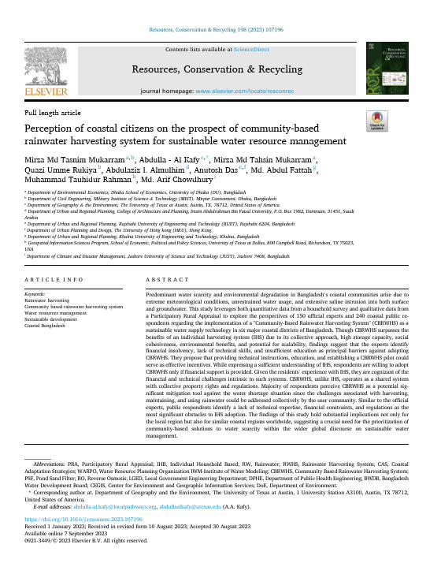
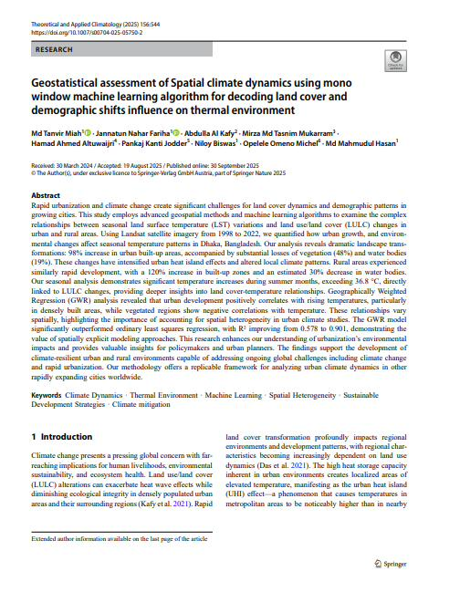
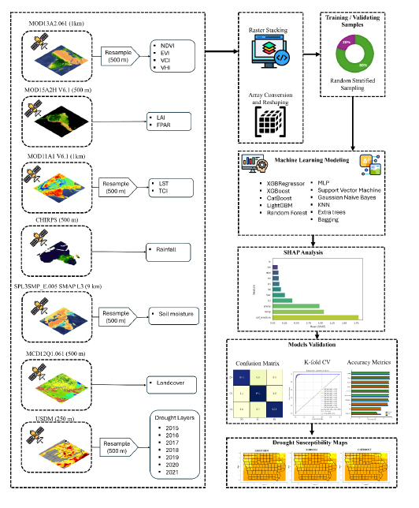
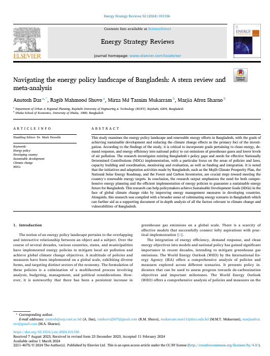
CITIES & SOCIETY
APPLIED CLIMATOLOGY
ASSESSMENT REVIEW
RISK MANAGEMENT
GEOENVIRONMENT
SYSTEMS & ENV.
MANAGEMENT
& ASSESSMENT
LETTERS
ISLAND STUDY
PREPARATION
Presentations & talks
- GeoAI-driven climate resilience using LiDAR urban morphology and spatial deep learning.AAAS Annual EPSCoR Summit 2026 · LA, USAMukarram, M.M.T., Rukiya, Q.U., Linderman, M.A., Wang, J. (2026)
- Advancing drought prediction in the Midwest US using remote sensing, ML models and explainable AI (XAI).AGU25Mukarram, M.M.T., Rukiya, Q.U., Linderman, M.A. (2025)
- Predicting future flood vulnerability zones in Texas using explainable GeoAI.AGU25Shahrier, M., Al Kafy, A., Mukarram, M.M.T. (2025)
- Probing the potential of green markets towards sustainable tourism development of Bangladesh.ICPACE, RUET, BangladeshMukarram, M.M.T., Das, A. (2023)
- Co-management of localized common pool natural resource: a sustainable fisheries management regime in Bangladesh.ICPACE, RUET, BangladeshDas, A., Mukarram, M.M.T. (2023)
- Spatio-temporal variation of groundwater quality in Mongla Upazila using IDW.ICEEST 2020, DhakaKhan, M.A.K., Ferdous, J., Mukarram, M.M.T., et al. (2020)
- Salinity intrusion in coastal Bangladesh: change in crop production system.4th ICSD 2020, DhakaNawshin, N., Ferdous, J., Mukarram, M.M.T., Khan, M.A.K. (2020)
- Exorbitant shrimp cultivation inhibiting agro-based livelihoods in Mongla Upazila.4th ICSD 2020, DhakaMukarram, M.M.T., Khan, M.A.K., Ferdous, J., et al. (2020)
- Local warming triggered by wetland loss in Dhaka city.4th ICSD 2020, DhakaFerdous, J., Mukarram, M.M.T., Khan, M.A.K., Nawshin, N. (2020)
- Sensor-based automated rooftop rainwater collection system and rainwater quality assessment of Dhaka city.ICACE-2020, CUET, BangladeshKhaled, A.M., Mukarram, M.M.T., et al. (2020)
Figures & field work
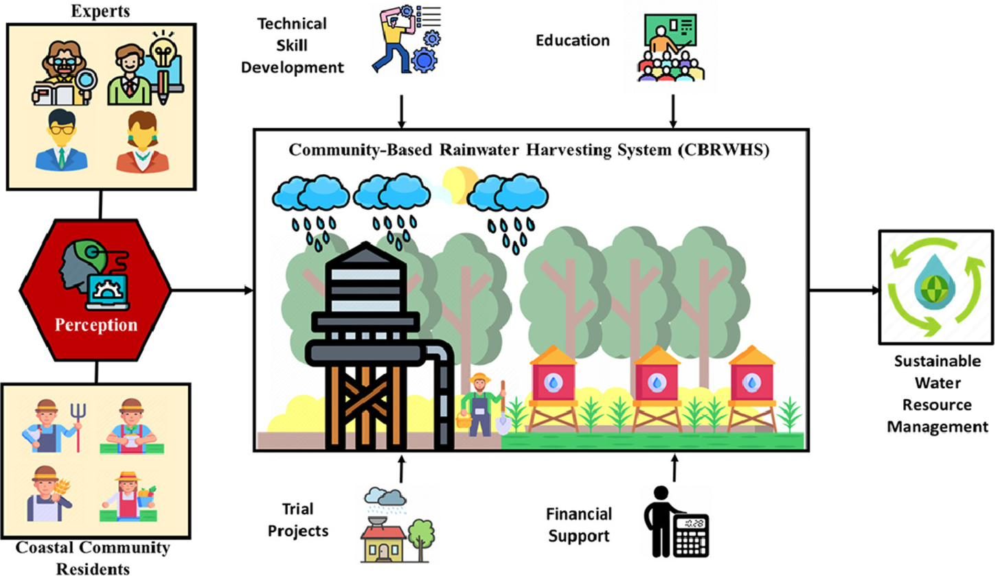
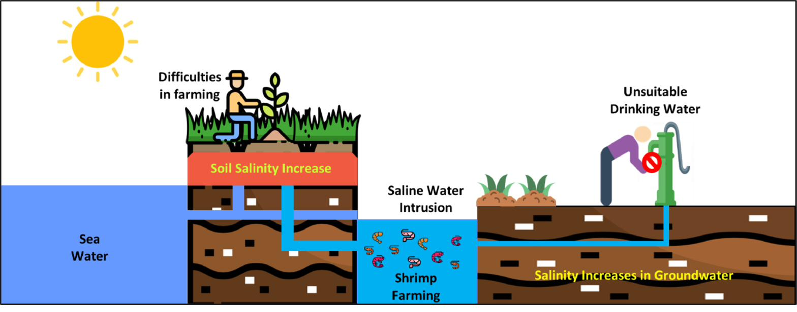
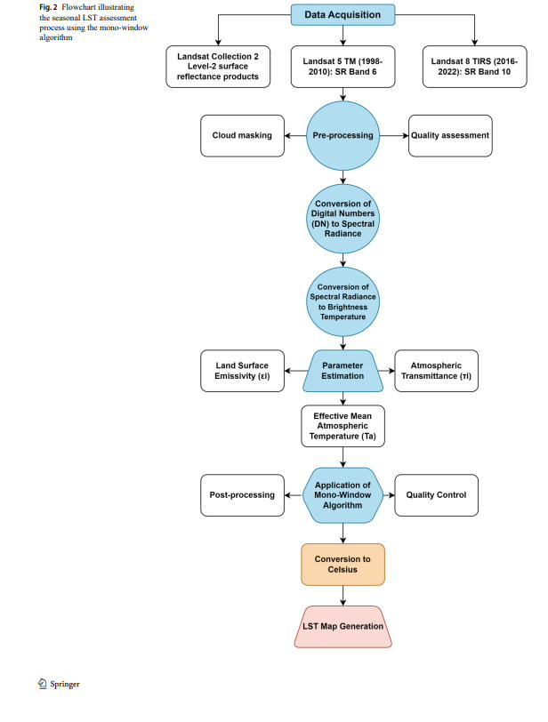
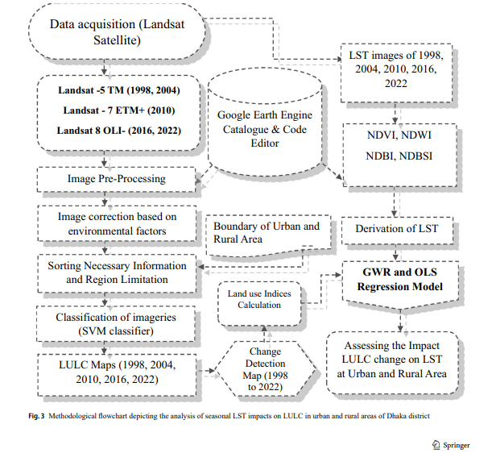
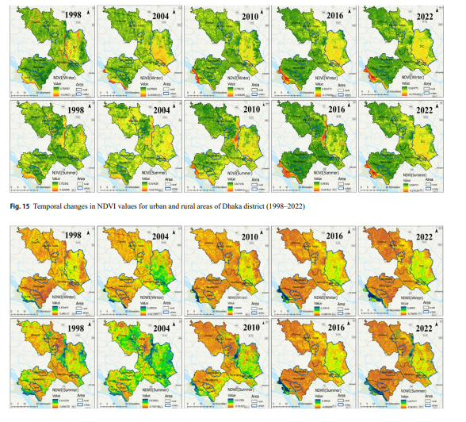
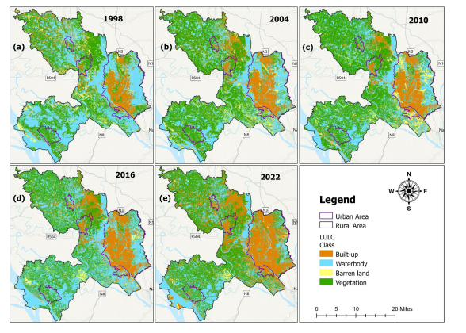
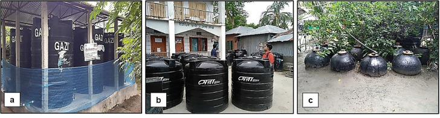
Recognition
Peer-review record
Manuscript reviewer across water, climate, health, and marine science journals — 10+ verified reviews.
Training & service
Voluntary roles & memberships
Climate Educate Project
Climate Mentor — Climathon (Global Climate Action Program)
Paper Abstract Reviewer
Let's build early warning tools that matter.
Open to research collaboration on GeoAI, disaster risk reduction, and decision-support systems.